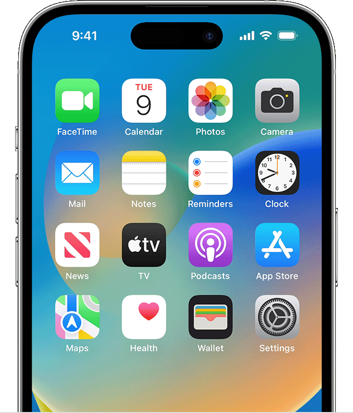

Native development
Native apps are built for a specific operating system. Android developers commonly use Kotlin, while iOS developers commonly use Swift. Native tools provide direct access to platform features and user-interface conventions.
HW 1: HTML and CSS
The process of planning, building, testing, and releasing software for mobile devices.
Mobile app development is the work involved in creating software for smartphones and tablets. Developers plan the app's features, design its screens, write code, test it on devices, and prepare it for release. Many apps also connect to online services to store data or provide features such as messaging and maps.
Two major mobile platforms are Android and iOS. Developers may build separate native apps for each platform or use a cross-platform framework to share some code between them.

Native apps are built for a specific operating system. Android developers commonly use Kotlin, while iOS developers commonly use Swift. Native tools provide direct access to platform features and user-interface conventions.
Cross-platform tools let developers build for more than one mobile platform while sharing much of the code. Flutter and React Native are popular examples. This can reduce duplicated work, although some platform-specific development may still be needed.
Controls should be easy to understand, text should be readable, and common tasks should take only a few steps.
Apps should protect personal information, use secure connections, and request only the permissions they need.
Apps should respond quickly and use battery, memory, and network resources carefully.